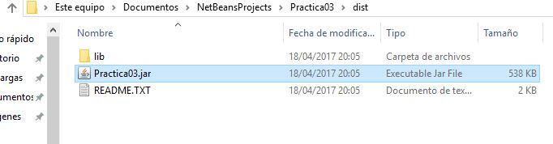
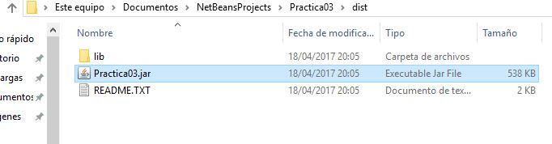

Arranque
18 de Marzo 2018 Andres y Luis
Vamos a la ubicación de la apliación cliente denominada "Practica3.jar" y clikeamos sobre el jar. En nuestro caso esta contenido en la carpeta dir del del proyecto.
Información de como acceder al servicio a través de la aplicación cliente.
18 de Marzo 2018 Andres y Luis
Vamos a la ubicación de la apliación cliente denominada "Practica3.jar" y clikeamos sobre el jar. En nuestro caso esta contenido en la carpeta dir del del proyecto.
18 de Marzo 2018, Andres y Luis
Tras ejecutar el jar, nos aparece una interfaz gráfica, con dos secciones.
| Sección A: |
Formulario básico para la autenticación, realiza una petición post al servidor. |
|
| Sección B: |
Obtiene los datos del DNI, los almacena en un fichero de texto y reliza una petición post al servidor. |
18 de Marzo 2018, Andres y Luis
Si nos autenticamos mediante el DNIe, y esta a sido satisfactoria, nos mostrará los datos públicos almacenados en el DNIe, en tres tipos de codificación, en decimal, en byte y en caractar, es decir, la representacion del caracter en decimal y en byte, pudiendo analizar los distinos OID publicados por HL7 Spain en 2008. De manera que para cualquier gestión relativa a los OID, contacte con webmaster at hl7spain org como curiosidad.
Puede que en la aplicación cliente ejecutada mediante el jar, no se muestren los datos. Esto se debe a que debes crear una carpeta con el nombre "Source" en el mismo directorio donde se encuentre el jar.
18 de Marzo 2018, Andres y Luis
Si todo ha sido correcto, nos mostrará una venta para salir de la aplicación.